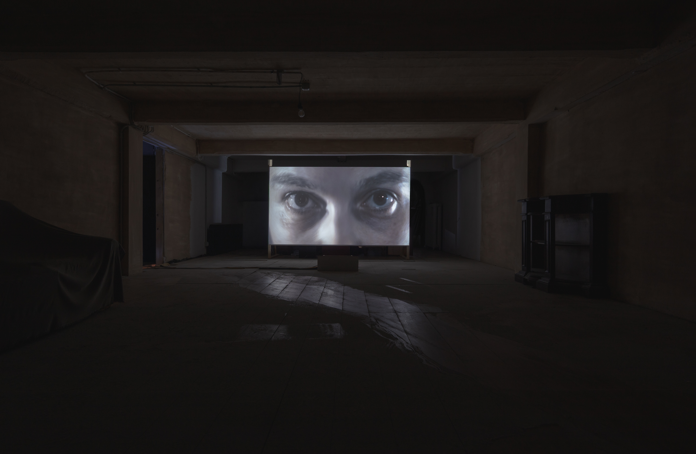
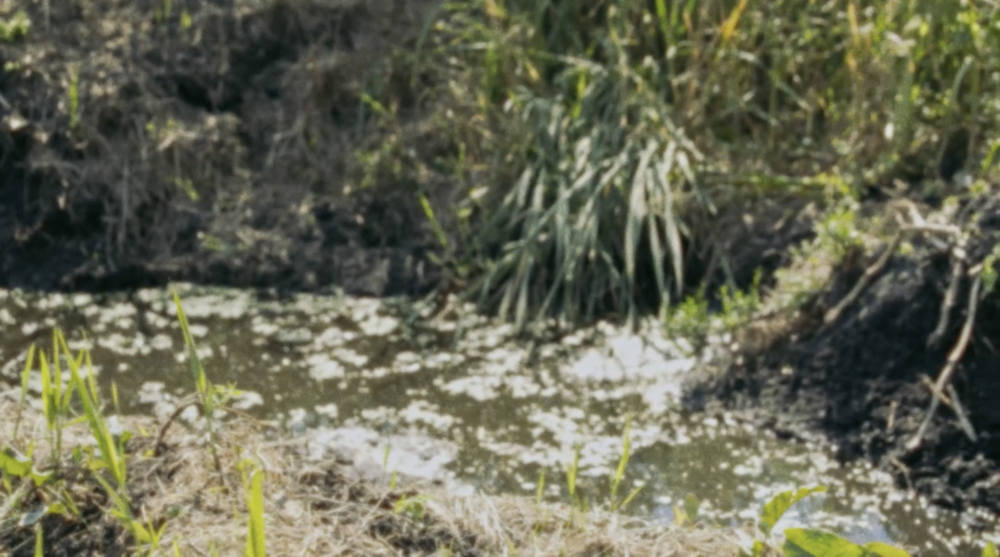

One register, everything dated: writing, artworks, talks. Filter it below.

Who makes art, and how do they make it?

I produce most creative projects with my collaborator Federico Pozuelo, as the art collective Prom. Since 2020, we are supported by Stichting Prom Art Collective, a Dutch non-profit foundation experimenting with other ways of making art.
stichtingprom.nl ↗